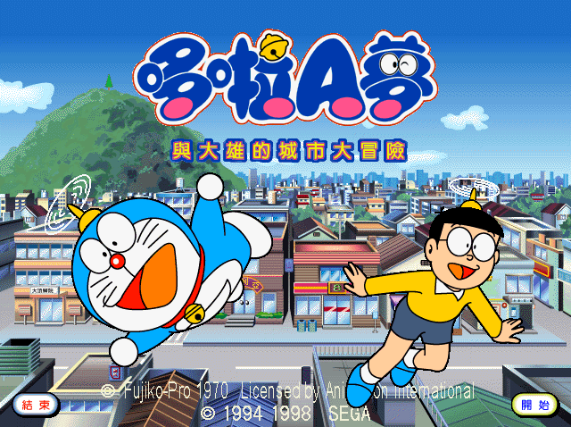
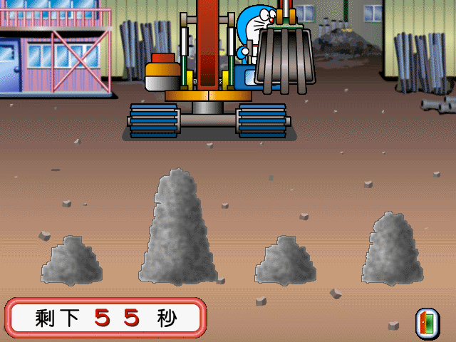
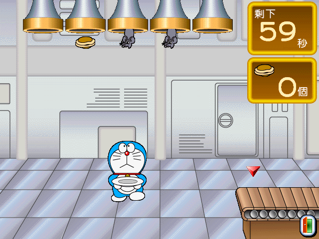

名稱：哆啦A夢與大雄的城市大冒險／小叮噹與大雄的街道探險 (中文版)
簡介：SEGA 1994年出品的幼童教育軟體，附有許多益智小遊戲，1998年移植至PC，2001年由
憶弘中文化並代理發行 [待補]。



保護：光碟，直接在光碟上執行。可在安裝後，將光碟上SEGA\PasoPico\Doraemon目錄拷貝
到C碟相同的目錄，再直接執行Doraemon目錄裡的DORA.EXE，即可免光碟。
限制：螢幕必須設定成256色模式，直接執行Doraemon目錄裡的DORA.EXE，可避免此一限制。
備註：剩餘記憶體不可太多，否則遊戲會誤判而無法執行，可進行下列修正：
DORA.EXE,MAIN.EXE
3D 20 75 38 00 7D 6E
-- -- -- -- -- EB --
備註：移除遊戲後，最好到Windows目錄查看有無PDORA.EXE，若有要將之刪除，否則可能每
一段時間後會固定加以啟動（簡直像是流氓軟體綁架系統）。